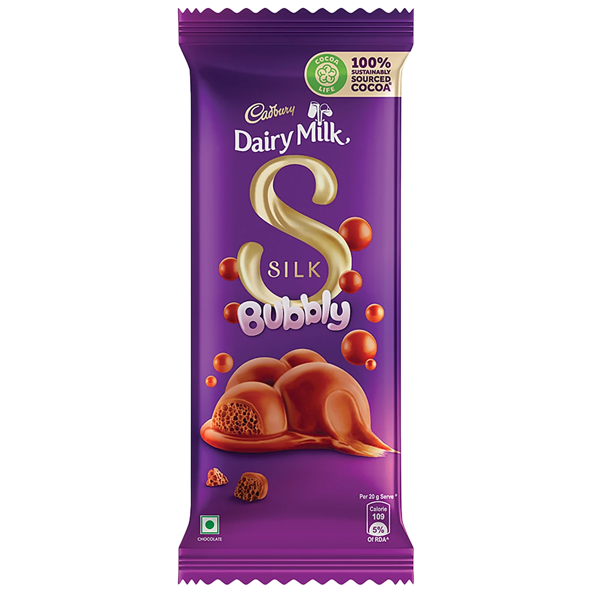

Cadbury Dairy Milk
Mondelēz International
Mumbai
F
INGREDIENTS
- Sugar
- Milk Solids
- Cocoa Solids
- Edible Vegetable Fat
- Emulsifiers
- Ammonium Phosphatide (INS 442)
- Polyglycerol Polyricinoleate (INS 476)
- Flavouring Substances (Vanillin – Nature-Identical)
Safe
- Milk Solids – Source of calcium and protein
- Cocoa Solids – Natural cocoa flavour and antioxidants (small amount)
Mild
- Sugar – High added sugar; occasional intake recommended
- Edible Vegetable Fat – Adds texture; excess not ideal
- Emulsifiers (INS 442, INS 476) – Improve consistency; safe in limits
Unsafe
- High Sugar Content (overall) – Increases risk of obesity and tooth decay
- Ultra-Processed Chocolate – Low satiety, easy to overconsume
- Artificial Flavouring (Vanillin) – No nutritional value
Alternative
- Dark Chocolate (70%+ Cocoa) – Lower sugar, higher cocoa
- Homemade Cocoa Milk – Milk + cocoa + minimal sugar
- Roasted Nuts – Healthy fats and protein
- Dates or Dry Fruits – Natural sweetness